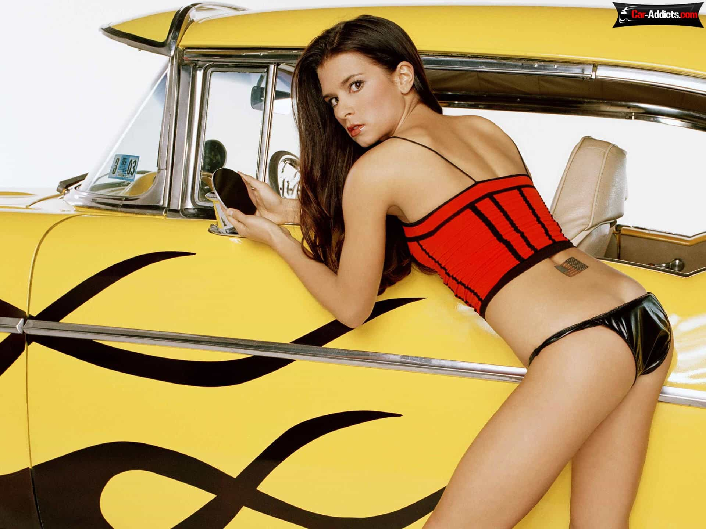
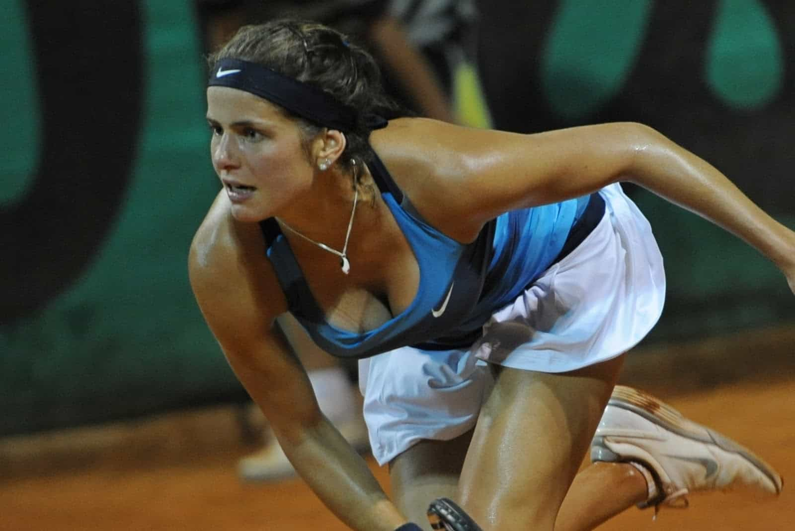

< < < Back
Is Danica Patrick The Most Overrated Sports Figure In History? – Return Of Kings
In 144 NASCAR Sprint Cup and Xfinity races, Danica Patrick has never been on top of the podium. So for years now, the sporting community and wider world have been fed a pernicious lie. Patrick has been paraded around as a champion of NASCAR, a metaphor for victory against sexism and a role model. Nothing could be further from the truth.
At every stage of her professional career, Patrick has benefited from, rather than been disadvantaged by, her gender. Her paucity of non-existence of any achievements at the highest level has not stopped her from obscuring a litany of more talented and deserving drivers.
Endorsements continue to rain in for her, notwithstanding that there’s no evidence she had to work any harder than her male counterparts. Literally dozens of male drivers have repeatedly out-achieved her during her time racing. Where is this sexism that’s always implied wherever Danica walks or whenever she farts in the wind?

Patrick is far more homely without make-up, photoshopping, and a fake CV of racing achievements.
Danica’s story has never been about sexism
Few people understand that machines and racing are in Danica Patrick’s blood. Her entire existence came about because her parents met each other on a blind date when her mother was a mechanic. Her father was also an avid racer of a variety of vehicles. This is no story of a girl reaching the heights of NASCAR without any advantage or previous connection to machines and racing.
Danica’s exposure to racing, mostly via her family upbringing, was so encompassing that she moved to the United Kingdom at the age of 16 to pursue her career. Media exposés mythologize Danica’s story as if she came out of nowhere, or from Planet Talent and Totally Deserving.
When she progressed into the IndyCar Series, before either NASCAR division, she proved to be a grossly underwhelming driver, winning only a single race in seven years and 115 starts.
Her boyfriend is better but a hundred times less well-known
Both Danica and her boyfriend, Ricky Stenhouse Jr., are mediocre NASCAR drivers at best. The pair placed 28th and 27th in the 2014 Sprint Cup respectively. Sure, they could race the pants off every ROK reader. But we are not professional drivers. And both Patrick and Stenhouse are professional drivers with subpar results compared to many of those above them. Again, though, Patrick’s skid-marked record still doesn’t impinge on her exponentially higher national exposure.
Stenhouse’s achievements far outstrip Patrick’s, to say the least. He is also five years younger. In the Xfinity Series, NASCAR’s second tier competition, Stenhouse was the overall champion in 2011 and 2012. He boasted eight individual wins from 107 races (7.5%).
Patrick, you guessed it, won zero races during her stint in the Xfinity Series (0% for our math-loathing SJW friends). In 58% (62) of his Xfinity races, Stenhouse placed in the top ten; Patrick was in the top ten a mere 11% of the time (seven from 61 races). Stenhouse had eight Xfinity pole positions, Patrick had a measly one.
Ridiculously, after Patrick had her best Xfinity Series season result (10th) in 2012, the same year Stenhouse won the championship, she debuted as a full-time driver in the Sprint Cup before him.
Even in the Sprint Cup, Stenhouse has outdone Patrick. Neither has won a race, but Stenhouse has twice as many top tens (8) as Patrick, who has raced on four more occasions.

Patrick makes German tennis player Julia Görges look non-overrated, a truly stellar achievement.
Other drivers are justifiably annoyed
Ex-driver Richard Petty, who won 200 individual Sprint Cup races and seven Sprint Cup championships, said that Danica Patrick would win a Sprint Cup race “[only] if everybody else stayed home.” His son Kyle, another former driver, was similarly and accurately dismissive of the preposterous myths surrounding Danica Patrick.
Pressured by the pack of wolves known as the misandry media, other drivers would be financially and socially eviscerated for drawing attention to Patrick’s actual racing antecedence, rather than endorsing and promulgating the ultra-hype. So they keep quiet and grind their teeth as she takes center stage, countless places below them.
Feminists want attention for female sports “stars” because they’re women, not because of their “talent”
Though NASCAR is now a non-gendered field, feminists are obsessed with putting Patrick on a pedestal, despite her never being on top of the NASCAR pedestal known as the winner’s podium. This is an extension of their approach in other gender-divided sports, where tennis players such as Maria Sharapova and Serena Williams are given equal standing with the far superior Roger Federer and Novak Djokovic.
These sycophantic feminists successfully pin their hopes on an ignorant sporting and particularly broader public who are shepherded into thinking Patrick is a legitimate champion. It need not matter that the evidence is there to prove that NASCAR’s token woman is a fraud in light of how she is incessantly presented. The story sticks if you repeat it ad nauseam.

Kevin Harvick, a NASCAR champion in reality, not fantasy. Note the absence of milking one’s gender.
The “truth” skeptics are out there
The Bleacher Report, that veritable bastion of (a kind of) red pill sporting wisdom, has been questioning Patrick’s missing credentials for several years. CBS joined the criticism in a more nuanced fashion, naming Patrick in their list of the top five most overrated athletes (although spare a thought and a tissue for Chamberlain, Sanders, Rodman, and Rodriguez for being bunched in with her!).
Facts are facts. But even facts don’t guarantee the truth will win out in the world of sports and money. Danica Patrick knows this better than anyone. All she needs to do is look at her bank balance and turn on her TV.
Read More: Being Popular In School Is Overrated